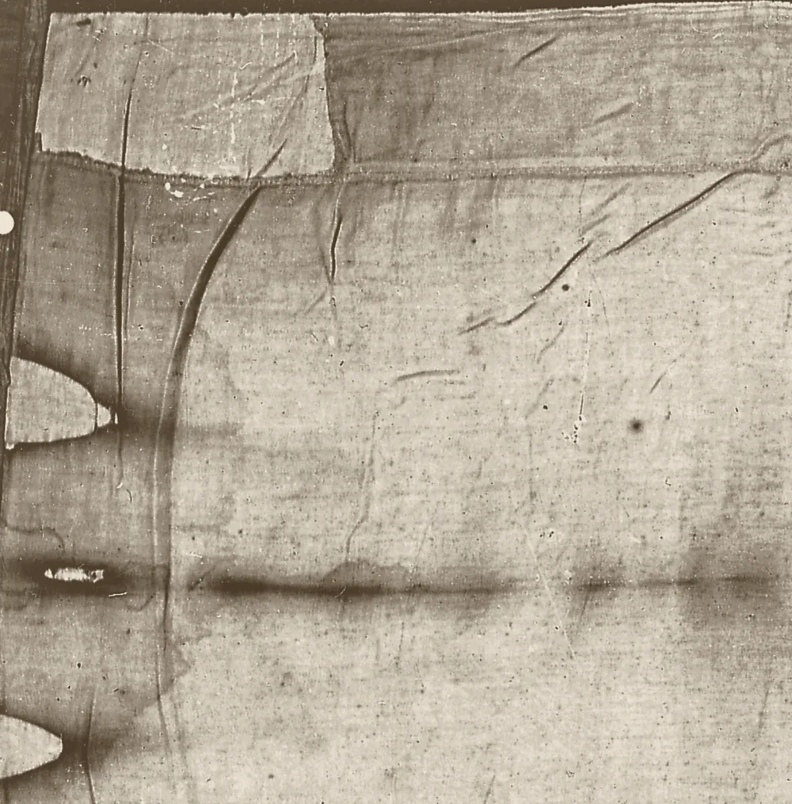

碳定年
这是证明裹尸布属于中世纪最有力的一项论据，值得仔细审视。这里介绍当时做了什么，发现了什么，批评者后来又发现了什么，以及它能证明什么、不能证明什么。
所有提出过的年代，放在一条线上
这个年代背后的十二个测量值
每一行是一个已发表的测量值及其标明的误差。阴影带是加权平均值，689±16个放射性碳年。由于结果过于分散，发表的年代采用了误差更大的简单平均值，691±31。请注意牛津的结果与亚利桑那的结果相距较远。后来的统计学家质疑的正是这种分散。
当时做了什么
1988年4月21日，在都灵主教座堂的圣器室里，Giovanni Riggi从布的一个角上切下了一条布样，位置在正面图像脚部附近的边缘，就在1973年取样处的上方。纺织专家Franco Testore和Gabriel Vial以及三个实验室的代表在场观看。每块约50毫克的样本被送往三个使用加速器质谱法的实验室：亚利桑那大学、牛津大学和苏黎世联邦理工学院。每个实验室还收到三份已知年代的对照样本。这次检测不是盲测：裹尸布不寻常的织法使它的样本很容易被认出来，作者们也说他们已经放弃了盲测程序。
对照样本的结果都正确：努比亚一座墓中的亚麻布、一具2世纪木乃伊的亚麻布，以及一件13世纪祭披上的线，年代都测得准确。然后，三个实验室的平均值被等权重地再次平均：距1950年691个放射性碳年，误差正负31年。作者采用这个更大的误差，是因为结果的分散程度超出了各实验室自己的误差范围。换算成日历年代，就是公元1262年至1312年或公元1353年至1384年，发表时取整为公元1260年至1390年。这篇由21位科学家署名、发表在《自然》上的论文，称这是这块亚麻布属于中世纪的确凿证据。
为什么它如此重要
放射性碳定年是一种成熟、经过充分检验的方法。对照样本都准确。而且这个年代恰好落在有文献记载的历史开始的地方：这块布在1350年代出现在法国利雷，1389年一位主教写道，有一位画家已经承认是他画的。对许多科学家来说，这种巧合就让此案了结了。
一条布样，一个角
所有结果都来自同一条布样，长约7至8厘米，是从一个角上切下来的。人们认为，几百年来公开展示时，人们一直用手拿着这个角，而且它紧挨着侧边布条的缝线。一些研究者认为它在中世纪经过修补。1986年在都灵举行的一次研讨会建议由七个实验室用两种不同的方法检测。1987年，这被缩减为三个实验室，全都用同一种方法；到了1988年，又缩减为从一个角上切下的一条布样。
批评者说，一个角不能代表一块4.4米长的布。支持这一年代的人回应说，实验室在显微镜下检查过样本，它看起来和主布一样。2010年，亚利桑那剩余的一块碎片上没有发现染料或涂层，只有几根零星的棉纤维。2026年，同一批亚利桑那研究者报告说，两块剩余碎片与主布相符，没有显示出污染。

为什么批评者质疑它
这些结果彼此吻合的程度，没有它们的误差范围所声称的那么好。1989年的论文承认了这一点：三个实验室的平均值没有通过一项标准的一致性检验，卡方值为6.4，刚好超过5%的临界水平。论文扩大了误差，但仍然称这一结果是确凿的。2017年，在一项法律申请之后，原始数据被公开；2019年，Tristan Casabianca领导的团队在Archaeometry上发表了重新分析。他们的一致性检验得出15.99，而临界值为5.99，他们的结论是这些样本不具有同质性。
统计学家Marco Riani和同事（2013年）发现，测得的年代沿着布样的长度方向漂移，好像样本上有某种东西在变化。其他研究者提出了中世纪织补、污染或1532年火灾造成的损伤等可能。
为什么它仍然是最有力的反对论据
这些批评没有一项指向一世纪。在对1988年数据的各项统计学重新分析中，提出的最大偏移是88个放射性碳年（Walsh和Schwalbe，2020年），这仍然让这块布属于中世纪。为了推翻这一年代而提出的每一种具体机制，例如火灾、细菌、一氧化碳或一次中子爆发，要么没有通过检验，要么无法检验。
曾经流行的修补理论，如今已不如2005年时那么有力：2010年和2026年研究的剩余碎片都没有显示染料或涂层，而且与主布相符。简而言之，这些重新分析表明，1988年的检测规模比它所声称的更小，也不那么干净。但它们并没有证明这个年代是错的。
我们诚实的总结
放射性碳年代说它属于中世纪，这是目前任何人掌握的最好的单项证据。1988年的检测也确实有设计上的缺陷：一条布样，一个角，三个实验室，而结果彼此吻合得不如报告中说的那么好。这足以成为进行一次新检测的理由，从布上的多个部位取多份样本，公开进行。但这不能成为无视这一结果的理由。
如果你是怀疑者，这是你最有力的一张牌，你应该握住它。如果你相信这块布是真品，这是你必须诚实回答的问题。无论哪种情况，其余的证据仍然需要解释，首先就是图像是如何形成的。